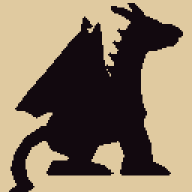
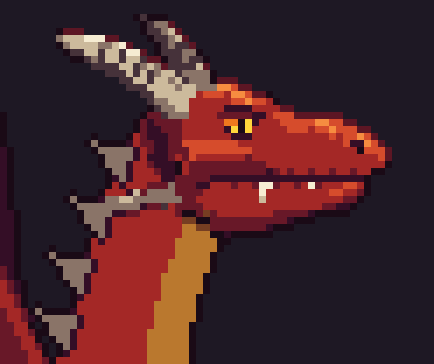
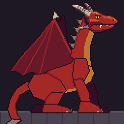

128×128. V7's head, horns and jaw frill copied pixel for pixel onto body V1's crouched pose, scaled up by a third so the body stays in proportion. The body is still flat colour; the head is fully shaded because it is V7 itself. The next pass shades the body to match.

Silhouette at 3×.
At 3×, 15 colours: V7's head plus the flat body.

The head at 4×: V7, unchanged

In game · 2×, two thirds of a phone's width
What changed from body V1
Face: V1 redrew the head at three quarters size and flat, which erased V7's brow, lit snout and cheek. V2 uses V7's own pixels.
Size: 96 to 128 pixels, so the body keeps its proportion to the full-size head.
Neck: redrawn to leave V7's skull and jaw cleanly.